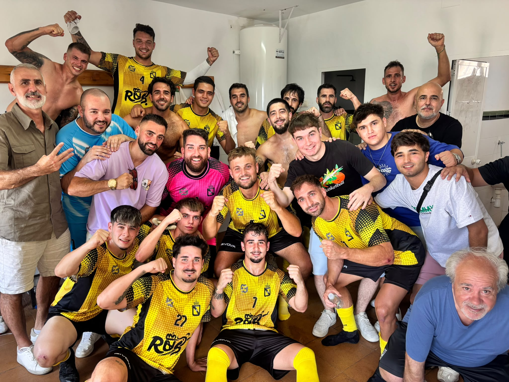

Orgullo de un pueblo, fútbol de cantera
Club Deportivo Rus E.F.
Temporada 2026/2027 · Rus (Jaén)
Nuestra identidad
Historia del club
Este texto es de ejemplo. Sustitúyelo por la historia real del club: es la única parte de esta sección que debes borrar.
El Club Deportivo Rus E.F. nació del empeño de un grupo de vecinos que querían que el pueblo tuviera un equipo con el que identificarse. Desde sus primeros partidos en el campo municipal, el club ha crecido al ritmo de su cantera: cientos de niños y niñas de Rus han vestido la camiseta y han aprendido aquí que ganar no es lo único que importa.
A lo largo de las décadas, el club ha vivido ascensos, temporadas difíciles y, sobre todo, una afición que nunca ha dejado solo al equipo. La grada de Rus es pequeña, pero ruidosa; y ese apoyo es el que ha mantenido vivo el proyecto año tras año.
Nuestra filosofía
Formar jugadores y personas. El trabajo de base, el respeto al rival y el compromiso con el pueblo son las señas de identidad que el club quiere mantener temporada tras temporada.
Competición
Calendario de partidos
Partidos del primer equipo, con fecha, hora, rival y condición de local o visitante.
| Jornada | Fecha | Hora | Rival | Condición | Resultado |
|---|
Cómo actualizar el calendario
El calendario se lee del archivo datos/calendario.js. Copia los datos de cada jornada desde la web de la Real Federación Andaluza de Fútbol y pégalos ahí, respetando el formato del bloque de ejemplo que encontrarás en el propio archivo.
El resultado se rellena solo cuando el partido ya se ha jugado. Si lo dejas vacío, aparece un guion.
Tabla
Clasificación
| Pos. | Equipo | PJ | G | E | P | GF | GC | Pts. |
|---|
Cómo actualizar la clasificación
La tabla se lee del archivo datos/clasificacion.js. Es cuestión de copiar las filas de la clasificación de la RFAF una vez por semana. El nombre Club Deportivo Rus E.F. se resalta automáticamente, y la primera y la última posición quedan marcadas como ascenso y descenso.
Colabora
Tarifa de patrocinios
Estas son las opciones para las empresas y comercios que quieran apoyar al club esta temporada. Cada pack combina presencia en la equipación, el campo y esta web.
Condiciones
Gracias
Patrocinadores
Las empresas y comercios que hacen posible que el club siga compitiendo. Pincha en cualquiera para visitar su web.
Tienda oficial
Venta de productos del club
Cómo comprar
Cómo gestionar la tienda
Los productos se editan en el archivo datos/productos.js. Ahí mismo se configura el número de WhatsApp y el correo donde quieres recibir los pedidos.
El botón de cada producto prepara el pedido y lo envía por WhatsApp o correo con el producto, la talla y el precio ya escritos. Después confirmas disponibilidad y cobras al entregarlo.
Para marcar un producto como agotado, pon stock: false en su bloque.
Hablemos
Contacto
Para patrocinios, fichajes, cantera o cualquier consulta, estamos a tu disposición.